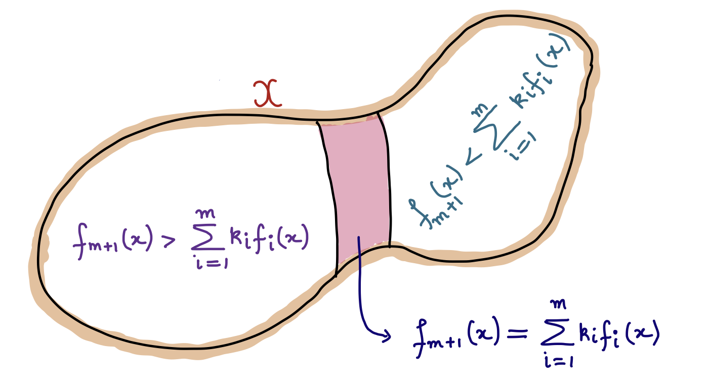
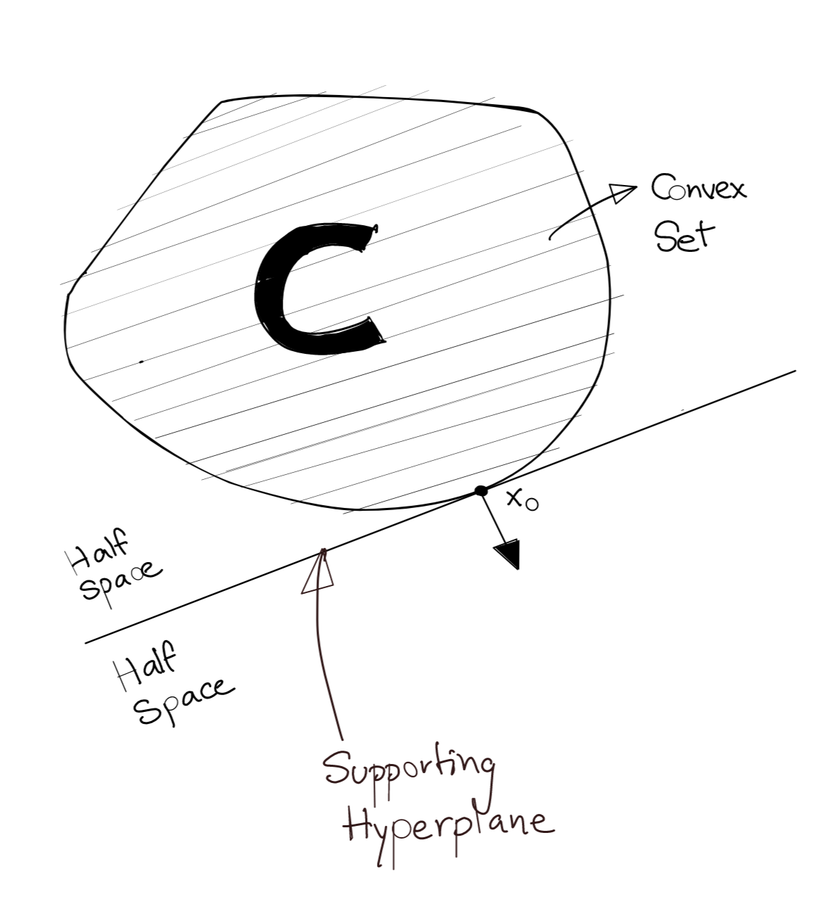

Two-Sided Hypothesis Testing
Sections 3.6–3.7 of Testing Statistical Hypotheses
(Lehmann & Romano, 2022)
November 24, 2026
The Statistical Hypothesis Testing Framework
Let $(\mathcal{X}, \mathcal{F})$ be a measurable sample space, and let $\mathcal{P} = \{P_\theta \mid \theta \in \Omega\}$ be a family of probability distributions on $\mathcal{X}$, parameterized by $\theta$ within the parameter space $\Omega$.
We partition the parameter space into two disjoint subsets, $\Omega = H \cup K$ with $H \cap K = \emptyset$:
- Null Hypothesis $(H)$: The default model state $(\theta \in H)$.
- Alternative Hypothesis $(K)$: The theoretical discovery $(\theta \in K)$.
A randomized test is a measurable function $\phi : \mathcal{X} \to [0, 1]$ that maps the observed data $x \in \mathcal{X}$ to the probability of rejecting the null hypothesis $H$.
Errors and the Power Function
The power function $\beta_\phi : \Omega \to [0, 1]$ maps a parameter $\theta$ to the expected probability of rejecting $H$ under the distribution $P_\theta$:
The framework imposes a strict asymmetry on decision errors:
- Size / Level $\alpha$ (Type I Error Control): We strictly bound the probability of falsely rejecting $H$. A test has level $\alpha$ if $\sup_{\theta \in H} \beta_\phi(\theta) \le \alpha$.
- Power (Avoiding Type II Error): Subject to the level $\alpha$ constraint, we seek to maximize the probability of correctly rejecting $H$ when it is false. Our goal is to maximize $\beta_\phi(\theta)$ for all $\theta \in K$.
Uniformly Most Powerful (UMP) Tests (1/2)
When the alternative $K$ is composite, the optimal test must dominate across all of $K$.
Let $\Phi_\alpha$ denote the set of all valid tests that strictly control the Type I error below a threshold $\alpha \in (0, 1)$:
Uniformly Most Powerful (UMP) Tests (2/2)
A test $\phi^* \in \Phi_\alpha$ is Uniformly Most Powerful (UMP) at level $\alpha$ if its power function satisfies:
The Neyman-Pearson Fundamental Lemma (1/2)
Let $X \in \mathcal{X}$ be a random variable with probability density function (pdf) $p(x)$ with respect to a measure $\mu$. Consider testing the simple null hypothesis $H : p = p_0$ versus the simple alternative $K : p = p_1$.
For any size $\alpha \in (0, 1)$, there exists a constant $k \ge 0$ and a test function $\phi : \mathcal{X} \to [0, 1]$ satisfying:
The Neyman-Pearson Fundamental Lemma (2/2)
Let $\phi$ be any test satisfying the size constraint (i) and the structural form (ii) from the previous slide.
The test $\phi$ is a Most Powerful test of level $\alpha$. Specifically, for any competing test $\phi^*$ that satisfies the level constraint:
it strictly holds that the power of $\phi$ dominates the power of $\phi^*$:
Motivation for a Generalized Lemma
The standard lemma solves the optimization for simple hypotheses. It maximizes an objective integral subject to exactly one constraint ($\int \phi p_0 \, d\mu = \alpha$).
For two-sided alternatives (e.g., $H : \theta \le \theta_1$ or $\theta \ge \theta_2$), controlling the size $\alpha$ requires binding the power function at multiple boundary points simultaneously:
Furthermore, imposing conditions like unbiasedness often requires local derivative constraints on the power function:
The Generalized Optimization Problem
To handle composite alternatives, we abstract the statistical requirements into a pure functional analysis problem.
Let $f_1, \dots, f_m, f_{m+1}$ be integrable functions (e.g., probability densities) with respect to a measure $\mu$. Let $c_1, \dots, c_m$ be a set of specified real constants.
We seek a critical function $\phi : \mathcal{X} \to [0, 1]$ that maximizes the objective integral:
subject to $m$ simultaneous equality constraints:
Theorem 3.6.1 : Generalized Fundamental Lemma (1/3)
Let $(\mathcal{X}, \mathcal{F}, \mu)$ be a measure space. Let $f_1, f_2, \dots, f_m : \mathcal{X} \to \mathbb{R}$ be a set of constraint functions and let $f_{m+1} : \mathcal{X} \to \mathbb{R}$ be an objective function. All of these functions are integrable w.r.t. $\mu$. Let $c_1, \dots, c_m \in \mathbb{R}$. Consider the class $\mathcal{C}$ defined as follows:
Then:
Theorem 3.6.1 : Generalized Fundamental Lemma (2/3)
A critical function $\phi \in \mathcal{C}$ is guaranteed to be this optimal maximizer if there exist constants $k_1, \dots, k_m \in \mathbb{R}$ such that
(On the boundary, $\phi(x)$ can take any value in $[0, 1]$.)
If the class $\mathcal{C}$ is instead defined by the inequality constraints $\int_{\mathcal{X}} \phi(x) f_i(x) \, d\mu(x) \le c_i \;\; \forall i \in \{1, \dots, m\}$, the exact same optimal structure from (b) applies, with the added restriction that the constants must be non-negative ($k_i \ge 0$).
Theorem 3.6.1 : Generalized Fundamental Lemma (3/3)
Let $M$ be defined as the set of all possible constraint evaluations across all valid tests:
Then $M$ is closed and convex in $\mathbb{R}^m$.
Proof Strategy for Theorem 3.6.1
We will decompose the proof of the Generalized Fundamental Lemma into four logical phases:
- Sufficiency (Part ii): Direct algebraic verification showing that the structural form guarantees an optimal maximizer.
- Inequality Constraints (Part iii): Extending sufficiency to bounded constraint spaces.
- Functional Analysis Preliminaries & Existence (Part i): Reviewing weak-* topology and compactness to guarantee an optimal test exists.
- Necessity (Part iv): Utilizing convex geometry and the Supporting Hyperplane Theorem to prove the optimal test must take this specific structural form.
Proof of Theorem 3.6.1: Part (ii) Sufficiency (1/4)
Let $\phi^* \in \mathcal{C}$ be any other valid critical function. We construct a difference function to analyze their behavior across the space $\mathcal{X}$:
The difference function satisfies $\Delta(x) \ge 0$ for all $x \in \mathcal{X}$.
Proof of Theorem 3.6.1: Part (ii) Sufficiency (2/4)
To verify that $\Delta(x) \ge 0$ everywhere, we partition the sample space $\mathcal{X}$ into distinct regions based on the structural form of the optimal test $\phi(x)$.

Proof of Theorem 3.6.1: Part (ii) Sufficiency (3/4)
Thus, $\Delta(x) = (+\text{ve})(+\text{ve}) \ge 0$.
Thus, $\Delta(x) = (-\text{ve})(-\text{ve}) \ge 0$.
Proof of Theorem 3.6.1: Part (ii) Sufficiency (4/4)
Since $\Delta(x) \ge 0$ everywhere, its Lebesgue integral must be non-negative:
Expanding the integral by linearity and distributing over the test functions yields:
Because both $\phi, \phi^* \in \mathcal{C}$, they satisfy the exact same constraints ($c_i$). The difference inside the summation is exactly $(c_i - c_i = 0)$.
Proof of Theorem 3.6.1: Part (iii) Inequality Constraints (1/4)
Assume the constraint space is now defined as:
Proof of Theorem 3.6.1: Part (iii) Inequality Constraints (2/4)
Let $\phi \in \mathcal{C}$ be a specific test function that satisfies the constraints exactly:
and assume there exist non-negative constants $k_1, \dots, k_m \ge 0$ such that $\phi$ takes the standard optimal structural form.
Let $\phi^* \in \mathcal{C}$ be any other competing test function in this inequality-bounded space. By definition, this means:
Proof of Theorem 3.6.1: Part (iii) Inequality Constraints (3/4)
From the proof of Part (ii), the non-negativity of the difference function $\Delta(x)$ led us to the following fundamental inequality before we assumed $c_i - c_i = 0$:
We substitute the exact equality $\int \phi f_i \, d\mu = c_i$ into the right-hand side of our inequality:
Proof of Theorem 3.6.1: Part (iii) Inequality Constraints (4/4)
- We are explicitly given that the constants are non-negative ($k_i \ge 0$).
- Because $\phi^* \in \mathcal{C}$, we know its integral is bounded by $c_i$, making the difference $\left(c_i - \int_{\mathcal{X}} \phi^* f_i \, d\mu\right) \ge 0$.
Since every term in the sum is the product of two non-negative numbers, the entire summation is strictly $\ge 0$. Thus:
Functional Analysis Preliminaries (1/2)
Let $(\mathcal{X}, \mathcal{F}, \mu)$ be a $\sigma$-finite measure space. We define these spaces formally as equivalence classes of functions (where $f \equiv g$ if $f = g$ $\mu$-a.e.):
-
The Space $L_1(\mathcal{X}, \mu)$: The space of absolutely integrable functions, bounded by the $L_1$-norm:
$$L_1(\mathcal{X}, \mu) \triangleq \left\{ f : \mathcal{X} \to \mathbb{R} \;\middle|\; \|f\|_1 = \int_{\mathcal{X}} |f(x)| \, d\mu < \infty \right\}$$
-
The Space $L_\infty(\mathcal{X}, \mu)$: The space of essentially bounded functions, bounded by the $L_\infty$-norm:
$$L_\infty(\mathcal{X}, \mu) \triangleq \left\{ \phi : \mathcal{X} \to \mathbb{R} \;\middle|\; \|\phi\|_\infty = \operatorname{ess\,sup}_{x \in \mathcal{X}} |\phi(x)| < \infty \right\}$$
Functional Analysis Preliminaries (2/2)
A sequence $\{\phi_n\} \subset L_\infty(\mathcal{X}, \mu)$ converges weak-* to $\phi \in L_\infty(\mathcal{X}, \mu)$ if and only if:
Insight: This implies that integration with an $L_1$ function acts as a continuous operation in the weak-* topology.
Let $X$ be a normed vector space and let $X^*$ be its continuous dual space. The closed unit ball in the dual space, defined as:
is compact with respect to the weak-* topology.
Proof of Theorem 3.6.1: Part (i) Existence (1/5)
We will prove existence by translating the problem into functional analysis and relying on topological compactness:
- Step 1: Show the space of all valid tests $\Phi$ is compact in the weak-* topology using the Banach–Alaoglu Theorem.
- Step 2: Define integration as a continuous mapping to prove the restricted constraint space $\mathcal{C}_{\text{a.e.}}$ is a closed subset, and thus compact.
- Step 3: Apply the Extreme Value Theorem to the objective integral to guarantee a maximizer exists in $\mathcal{C}_{\text{a.e.}}$.
- Step 4: Fix the boundary behavior (measure zero sets) to ensure the test is strictly bounded in $[0, 1]$ everywhere.
Proof of Theorem 3.6.1: Part (i) Existence (2/5)
Let $B \triangleq \{ \phi \in L^\infty(\mathcal{X}, \mu) \mid \|\phi\|_\infty \le 1 \}$ be the closed unit ball. By the Banach–Alaoglu theorem, $B$ is compact in the weak-* topology.
Define the set of all valid test functions (up to almost everywhere equivalence):
We can express $\Phi$ as the intersection of the unit ball $B$ with the set of non-negative functions:
Because $\Phi$ is a closed subset of the compact set $B$, $\Phi$ itself must be weakly-* compact.
Proof of Theorem 3.6.1: Part (i) Existence (3/5)
Consider the mapping $N_f : L^\infty(\mathcal{X}, \mu) \to \mathbb{R}$ defined by the integral:
Since $f \in L_1$, $N_f$ is a continuous map under the weak-* topology.
For each constraint $i \in \{1, \dots, m\}$, the singleton set $\{c_i\} \subset \mathbb{R}$ is closed. Therefore, its pre-image $N_{f_i}^{-1}(\{c_i\})$ is a closed set.
We define our specific constraint class almost everywhere as:
Being an intersection of closed sets with the compact set $\Phi$, $\mathcal{C}_{\text{a.e.}}$ is compact.
Proof of Theorem 3.6.1: Part (i) Existence (4/5)
Now consider our primary objective functional $N_{f_{m+1}} : L^\infty(\mathcal{X}, \mu) \to \mathbb{R}$ defined as:
- Because $f_{m+1} \in L_1(\mathcal{X}, \mu)$, the map $N_{f_{m+1}}$ is weak-* continuous.
- The domain $\mathcal{C}_{\text{a.e.}}$ over which we are maximizing is weak-* compact.
A continuous real-valued function on a compact space attains its maximum. Therefore, there must exist a function $\phi^* \in \mathcal{C}_{\text{a.e.}}$ that maximizes $N_{f_{m+1}}(\phi^*)$.
Proof of Theorem 3.6.1: Part (i) Existence (5/5)
The maximizer $\phi^*$ is bounded between $[0, 1]$ almost everywhere. To make it a strictly valid test everywhere, we define $\tilde{\phi}^* : \mathcal{X} \to [0, 1]$ as:
Because $\phi^* \in \Phi$, the set of points where $\phi^*(x) > 1$ or $\phi^*(x) < 0$ has measure zero. Thus, $\phi^*$ and $\tilde{\phi}^*$ are equal almost everywhere. This guarantees the exact integrals are preserved:
Thus, the strictly valid optimal test $\tilde{\phi}^*$ exists.
Towards part (iv): Convex Geometry (1/3)
A set $M \subset \mathbb{R}^m$ is called convex if, for any two points $u, v \in M$ and any scalar $\alpha \in [0, 1]$, the line segment connecting them is also entirely contained within $M$:
- The interior of $M$, denoted $\operatorname{Int}(M)$, is the set of all points in $M$ that possess an open neighborhood completely contained within $M$.
- A point $y \in \mathbb{R}^m$ lies on the boundary of $M$ if every neighborhood of $y$ contains both points in $M$ and points outside of $M$.
Towards part (iv): Supporting Hyperplane Theorem (2/3)
Let $M \subset \mathbb{R}^m$ be a convex set, and let $y \in \mathbb{R}^m$ be a point that does not belong to the interior of $M$ (i.e., $y \notin \operatorname{Int}(M)$).
Then, there exists a non-zero vector $a \in \mathbb{R}^m \setminus \{0\}$ such that the hyperplane defined by the normal vector $a$ bounds the set $M$:
Equivalently, expressing the Euclidean inner product as a sum:
Towards part (iv): Supporting Hyperplane Theorem (3/3)

Set
Proof of Theorem 3.6.1: Part (iv) Necessity (Strategy 1/4)
-
Step 1: Mapping to Euclidean Space
Define image sets for the tests under our integral mappings:$$M \triangleq \left\{ \left( \int_{\mathcal{X}} \phi f_1 \, d\mu, \dots, \int_{\mathcal{X}} \phi f_m \, d\mu \right) \;\middle|\; \phi \in \Phi \right\} \subset \mathbb{R}^m$$and similarly define $S \subset \mathbb{R}^{m+1}$ by including the objective integral $\int \phi f_{m+1} \, d\mu$. We will first prove $M$ and $S$ are compact and convex.
Proof of Theorem 3.6.1: Part (iv) Necessity (Strategy 2/4)
-
Step 2: Supporting Hyperplane
Show the optimal test maps to a boundary point $p^* \in \partial S$. Apply the Supporting Hyperplane Theorem to find a separating normal vector $w$:$$\exists w \in \mathbb{R}^{m+1} \setminus \{0\} \quad \text{s.t.} \quad \langle w, s \rangle \le \langle w, p^* \rangle \quad \forall s \in S$$ -
Step 3: Objective Weight Positivity
Exploit the interior hypothesis $c \in \operatorname{Int}(M)$ to strictly prove that the weight corresponding to the objective function is strictly positive:$$w_{m+1} > 0$$
Proof of Theorem 3.6.1: Part (iv) Necessity (Strategy 3/4)
-
Step 4: Algebraic Reduction
Since $w_{m+1} > 0$, divide the fundamental inequality $\langle w, s \rangle \le \langle w, p^* \rangle$ by $w_{m+1}$. -
Define the constants $k_i \triangleq -w_i / w_{m+1}$ for $i \in \{1, \dots, m\}$. By substituting the integrals back in, reduce the summation to a single bounded integral over $\mathcal{X}$:
$$\int_{\mathcal{X}} (\phi - \phi^*) \left( f_{m+1} - \sum_{i=1}^{m} k_i f_i \right) d\mu \le 0 \qquad \forall \phi \in \Phi$$
Proof of Theorem 3.6.1: Part (iv) Necessity (Strategy 4/4)
-
Step 5: Measure-Theoretic Necessity
Analyze the sign of the inner function $g(x)$. Use contradiction on arbitrary subsets $A \subset \mathcal{X}$ with strictly positive measure ($\mu(A) > 0$) to force the required structure:$$\phi^*(x) = \begin{cases} 1, & \text{if } g(x) > 0 \\ 0, & \text{if } g(x) < 0 \end{cases} \qquad \mu\text{-a.e.}$$
This guarantees the optimal test must match the generalized Neyman–Pearson structural form almost everywhere.
Proof of Theorem 3.6.1: Part (iv) Necessity (Step 1 – 1/4)
We map the infinite-dimensional test space $\Phi$ into finite-dimensional Euclidean spaces by evaluating the constraint and objective integrals.
Proof of Theorem 3.6.1: Part (iv) Necessity (Step 1 – 2/4)
First, observe that the space of all valid tests $\Phi$ is a convex set. For any $\phi_1, \phi_2 \in \Phi$ and scalar $\alpha \in [0, 1]$:
Next, consider the mapping $\phi \mapsto \int_{\mathcal{X}} \phi f_i \, d\mu$. Because the Lebesgue integral is a strictly linear operator, the sets $M$ and $S$ are generated by applying a linear transformation to a convex set.
The image of a convex set under a linear map is always convex. Thus, both $M$ and $S$ are convex sets in $\mathbb{R}^m$ and $\mathbb{R}^{m+1}$.
Proof of Theorem 3.6.1: Part (iv) Necessity (Step 1 – 3/4)
- The test space $\Phi$ is compact in the weak-* topology (Banach–Alaoglu).
- Because each $f_i \in L_1(\mathcal{X}, \mu)$, the mapping $\phi \mapsto \int_{\mathcal{X}} \phi f_i \, d\mu$ is continuous with respect to the weak-* topology.
Proof of Theorem 3.6.1: Part (iv) Necessity (Step 1 – 4/4)
A fundamental topological theorem states that the continuous image of a compact space is necessarily compact. Since $\Phi$ is compact, its images $M$ and $S$ must also be compact sets within their respective Euclidean spaces.
In finite-dimensional Euclidean space, a set is compact if and only if it is both closed and bounded.
Proof of Theorem 3.6.1: Part (iv) Necessity (Step 2 – 1/5)
By our primary hypothesis, the constraint vector $c = (c_1, \dots, c_m)$ is strictly an interior point of the constraint space $M$.
Let $\phi^* \in \Phi$ be the specific test function that maximizes the objective integral while satisfying these constraints. We define this maximum objective value as $c_{m+1}^*$:
We can now map this optimal test $\phi^*$ into our extended Euclidean set $S \subset \mathbb{R}^{m+1}$. Let $p^*$ be the image of $\phi^*$:
Since $\phi^* \in \Phi$, it immediately follows that $p^* \in S$.
Proof of Theorem 3.6.1: Part (iv) Necessity (Step 2 – 2/5)
The optimal point $p^* = (c_1, \dots, c_m, c_{m+1}^*)$ lies on the boundary, $p^* \in \partial S$.
- Assume for contradiction: $p^*$ is an interior point ($p^* \in \operatorname{Int}(S)$).
- Then there exists some radius $\epsilon > 0$ such that the open ball $B_\epsilon(p^*) \subset S$.
-
Construct a new point $p'$ shifted purely in the $(m+1)$-th coordinate:
$$p' \triangleq p^* + \left(0, \dots, 0, \frac{\epsilon}{2}\right) = \left(c_1, \dots, c_m, c_{m+1}^* + \frac{\epsilon}{2}\right)$$
- Because the distance $\|p' - p^*\| = \epsilon/2 < \epsilon$, we guarantee $p' \in B_\epsilon(p^*) \subset S$.
Proof of Theorem 3.6.1: Part (iv) Necessity (Step 2 – 3/5)
- We established that $p' = \left(c_1, \dots, c_m, c_{m+1}^* + \dfrac{\epsilon}{2}\right) \in S$.
-
By the definition of the geometric set $S$, the existence of $p' \in S$ implies there must exist some test function $\phi' \in \Phi$ satisfying the constraints $c_i$, but with objective value:
$$\int_{\mathcal{X}} \phi' f_{m+1} \, d\mu = c_{m+1}^* + \frac{\epsilon}{2}$$
- Since $\epsilon > 0$, this yields an objective strictly greater than $c_{m+1}^*$.
- This directly contradicts the fact that $c_{m+1}^*$ is the maximum possible value ($\Rightarrow\Leftarrow$).
Proof of Theorem 3.6.1: Part (iv) Necessity (Step 2 – 4/5)
We have now established two critical geometric facts from Step 1 and Step 2:
- The image set $S \subset \mathbb{R}^{m+1}$ is a convex set.
- The point $p^* \in S$ does not belong to the interior of $S$ ($p^* \notin \operatorname{Int}(S)$).
By the Supporting Hyperplane Theorem, there must exist a non-zero normal vector $w = (w_1, \dots, w_{m+1}) \in \mathbb{R}^{m+1} \setminus \{0\}$ that separates $S$ from the half-space beyond $p^*$.
Therefore, for all points $s \in S$, we have the bounding inequality:
Proof of Theorem 3.6.1: Part (iv) Necessity (Step 2 – 5/5)
We take the fundamental geometric inequality:
Expanding the Euclidean inner product into summations over the $m+1$ coordinates:
Since we know that $p^* = (c_1, \dots, c_m, c_{m+1}^*)$, therefore:
This core algebraic inequality will serve as the engine for the rest of the proof.
Proof of Theorem 3.6.1: Part (iv) Necessity (Step 3 – 1/5)
We first show that $w_{m+1}$ cannot be negative. Consider any test function $\phi$ that satisfies the constraints $\int_{\mathcal{X}} \phi f_i \, d\mu = c_i$. Let $s_{m+1} = \int_{\mathcal{X}} \phi f_{m+1} \, d\mu$. The image of this test in $S$ is $s = (c_1, \dots, c_m, s_{m+1})$.
Substitute $s$ into our hyperplane inequality $\sum_{i=1}^{m+1} w_i s_i \le \sum_{i=1}^{m+1} w_i p_i^*$:
Canceling the constraint summations from both sides yields:
Because $c_{m+1}^*$ is the supremum over all such tests, $(c_{m+1}^* - s_{m+1}) \ge 0$. Thus, it must be that $w_{m+1} \ge 0$.
Proof of Theorem 3.6.1: Part (iv) Necessity (Step 3 – 2/5)
- Assume for contradiction that $w_{m+1} = 0$.
-
The hyperplane inequality reduces entirely to the first $m$ dimensions. Defining the truncated vector $\tilde{w} \triangleq (w_1, \dots, w_m) \in \mathbb{R}^m$, we have:
$$\langle \tilde{w}, m \rangle \le \langle \tilde{w}, c \rangle \qquad \forall m \in M$$
- By our primary hypothesis, the constraint vector $c$ is strictly an interior point of the constraint set $M$ ($c \in \operatorname{Int}(M)$).
-
Therefore, there exists some radius $\delta > 0$ such that the open ball $B_\delta(c)$ is completely contained within $M$:
$$B_\delta(c) \subseteq M$$
Proof of Theorem 3.6.1: Part (iv) Necessity (Step 3 – 3/5)
We exploit this interior ball $B_\delta(c)$ by constructing a specific point $m'$ inside it. We step away from $c$ precisely in the direction of the normal vector $\tilde{w}$:
Let us verify the distance of this new point from the center $c$:
Proof of Theorem 3.6.1: Part (iv) Necessity (Step 3 – 4/5)
Since our constructed point $m' \in M$, it must satisfy the reduced geometric inequality:
We substitute $m' = c + \dfrac{\delta}{2\|\tilde{w}\|}\tilde{w}$ directly into the inner product:
Proof of Theorem 3.6.1: Part (iv) Necessity (Step 3 – 5/5)
From the previous reduction, we established $\dfrac{\delta}{2}\|\tilde{w}\| \le 0$. Since $\delta > 0$, the norm must be zero:
Combined with our assumption $w_{m+1} = 0$, the full normal vector becomes:
Proof of Theorem 3.6.1: Part (iv) Necessity (Step 4 – 1/2)
Recall our fundamental inequality evaluated at an arbitrary point $s \in S$ (generated by $\phi \in \Phi$) and the optimal point $p^*$ (generated by $\phi^*$):
Since we proved $w_{m+1} > 0$, we can safely divide the entire inequality by $w_{m+1}$. We define new constants $k_i$:
Dividing by $w_{m+1}$ and substituting $k_i$ yields the rearranged form:
Proof of Theorem 3.6.1: Part (iv) Necessity (Step 4 – 2/2)
Substitute the integral definitions $s_i = \int_{\mathcal{X}} \phi f_i \, d\mu$ and $c_i = \int_{\mathcal{X}} \phi^* f_i \, d\mu$ directly into our rearranged inequality:
By the linearity of the Lebesgue integral, we group the terms:
Proof of Theorem 3.6.1: Part (iv) Necessity (Step 5 – 1/6)
We have the master integral inequality valid for any test $\phi \in \Phi$:
We partition the sample space $\mathcal{X}$ based on the sign of $g(x)$:
The optimal test $\phi^*$ must possess the following structure:
Proof of Theorem 3.6.1: Part (iv) Necessity (Step 5 – 2/6)
- Assume for contradiction that $\phi^*(x) \ne 1$ almost everywhere on $E^+$.
-
This implies there exists a measurable subset $A \subseteq E^+$ with strictly positive measure ($\mu(A) > 0$) and some $\epsilon > 0$ such that:
$$\phi^*(x) \le 1 - \epsilon \qquad \forall x \in A$$
-
We construct a new valid test function $\phi \in \Phi$ that is identical to $\phi^*$ everywhere except on the problematic set $A$, where we push it to its maximum bound:
$$\phi(x) = \begin{cases} 1, & \text{if } x \in A \\ \phi^*(x), & \text{if } x \notin A \end{cases}$$
Proof of Theorem 3.6.1: Part (iv) Necessity (Step 5 – 3/6)
Evaluate our master inequality with this newly constructed test $\phi$:
The integral over the complement $A^c$ vanishes. On the set $A \subseteq E^+$:
- $g(x) > 0$ strictly (by definition of $E^+$).
- $(1 - \phi^*(x)) \ge \epsilon > 0$ strictly (by our assumption).
Proof of Theorem 3.6.1: Part (iv) Necessity (Step 5 – 4/6)
- Assume for contradiction that $\phi^*(x) \ne 0$ almost everywhere on $E^-$.
-
This implies there exists a measurable subset $B \subseteq E^-$ with strictly positive measure ($\mu(B) > 0$) and some $\epsilon > 0$ such that:
$$\phi^*(x) \ge \epsilon \qquad \forall x \in B$$
-
We construct a new valid test function $\phi \in \Phi$ by forcing it to zero on the problematic set $B$:
$$\phi(x) = \begin{cases} 0, & \text{if } x \in B \\ \phi^*(x), & \text{if } x \notin B \end{cases}$$
Proof of Theorem 3.6.1: Part (iv) Necessity (Step 5 – 5/6)
Evaluate our master inequality $\int_{\mathcal{X}} (\phi - \phi^*) g(x) \, d\mu \le 0$ with our newly constructed test $\phi$:
The integral over the complement $B^c$ clearly vanishes. Now, consider the remaining terms strictly on the subset $B \subseteq E^-$:
- $g(x) < 0$ strictly (by the definition of the region $E^-$).
- $(-\phi^*(x)) \le -\epsilon < 0$ strictly (by our contradiction assumption).
Proof of Theorem 3.6.1: Part (iv) Necessity (Step 5 – 6/6)
From the previous slide, both factors in our integral are strictly negative on $B$:
The product of two strictly negative terms is strictly positive, yielding an integral strictly $> 0$. This explicitly contradicts our master bound ($\le 0$). Thus, our assumption was false, and we must have $\phi^*(x) = 0$ for $\mu$-a.e. $x \in E^-$.
This formally completes the structural proof of Theorem 3.6.1 Part (iv). $\blacksquare$
Two-Sided Hypotheses
UMP Tests in One-Parameter Exponential Families (Theorem 3.7.1)
One-Parameter Exponential Families
A family of probability distributions with density (PDF) or mass function (PMF) $p_\theta(x)$ is called a one-parameter exponential family if it can be written in the form:
where:
- $\theta$ is the real-valued parameter of interest,
- $T(x)$ is a real-valued statistic of the data (sufficient statistic),
- $C(\theta) > 0$ is the normalizing constant (ensures total probability is $1$),
- $h(x) \ge 0$ depends only on $x$ (so the support $\{x : p_\theta(x) > 0\}$ is the same for all $\theta$).
Theorem 3.7.1 : UMP Tests for Two-Sided Hypotheses (1/2)
Let $X$ have a distribution from a one-parameter exponential family with density $p_\theta(x) = C(\theta) e^{\theta T(x)} h(x)$. Consider testing the composite null hypothesis $H : \theta \le \theta_1$ or $\theta \ge \theta_2$ ($\theta_1 < \theta_2$) against the alternative $K : \theta_1 < \theta < \theta_2$.
Then:
Theorem 3.7.1 : UMP Tests for Two-Sided Hypotheses (2/2)
For the UMP level $\alpha$ test $\phi$ defined in Part (i):
Proof of Theorem 3.7.1: Step 1 (1/3)
Fix an arbitrary alternative $\theta' \in (\theta_1, \theta_2)$. We first solve the relaxed problem of maximizing
To apply Theorem 3.6.1, we must verify that $(\alpha, \alpha) \in \operatorname{Int}(M)$, where
Proof of Theorem 3.7.1: Step 1 (2/3)
Since $\theta_1 < \theta_2$, we have $P_{\theta_1} \ne P_{\theta_2}$.
Proof of Theorem 3.7.1: Step 1 (3/3)
Proof of Theorem 3.7.1: Step 2 (1/3)
From Step 1, Theorem 3.6.1 gives an optimal test $\phi^*$ and constants $k_1, k_2 \ge 0$ such that
We rule out the three boundary cases where at least one multiplier is zero.
The rejection condition reduces to $p_{\theta'}(x) > 0$. Since all $p_\theta(x) = C(\theta)e^{\theta T(x)}h(x)$ share the same support $\{x : h(x) > 0\}$, this forces $\phi^*(x) = 1$ everywhere $p_{\theta_1}(x) > 0$.
Hence $\displaystyle \int_{\mathcal{X}} \phi^*(x) p_{\theta_1}(x) \, d\mu = 1 > \alpha$, violating the constraint $\mathbb{E}_{\theta_1}[\phi^*] \le \alpha$. Contradiction.
Proof of Theorem 3.7.1: Step 2 (2/3)
The rejection condition simplifies to $p_{\theta'}(x) > k_1 p_{\theta_1}(x)$. Substituting the exponential family density and canceling $h(x) > 0$:
Since $\theta_1 < \theta' < \theta_2$, we have $\theta' - \theta_1 > 0$. Taking logarithms yields a right-tailed test:
Proof of Theorem 3.7.1: Step 2 (3/3)
-
Case 3 ($k_1 = 0, k_2 > 0$): The rejection condition becomes $p_{\theta'}(x) > k_2 p_{\theta_2}(x)$, i.e.,
$$e^{(\theta' - \theta_2) T(x)} > k_2 \frac{C(\theta_2)}{C(\theta')}.$$Since $\theta' - \theta_2 < 0$, dividing by $(\theta' - \theta_2)$ reverses the inequality, yielding a left-tailed test $T(x) < C$.
-
Here $k_2 > 0$ forces $\mathbb{E}_{\theta_2}[\phi^*] = \alpha$. By MLR, $\beta_{\phi^*}(\theta)$ is strictly decreasing in $\theta$, so $\theta_1 < \theta_2$ implies
$$\mathbb{E}_{\theta_1}[\phi^*] > \mathbb{E}_{\theta_2}[\phi^*] = \alpha \quad \text{(violating } \mathbb{E}_{\theta_1}[\phi^*] \le \alpha\text{ — Contradiction).}$$
Both multipliers are strictly positive ($k_1 > 0$ and $k_2 > 0$), and both boundary constraints hold with equality:
Proof of Theorem 3.7.1: Step 3 (1/3)
From Steps 1–2, we have $k_1, k_2 > 0$ and the rejection condition
Dividing both sides by $p_{\theta'}(x) = C(\theta') e^{\theta' T(x)} h(x) > 0$ (on the common support $\{x : h(x) > 0\}$) gives
where the constants are strictly positive: $a_1 \triangleq k_1 \dfrac{C(\theta_1)}{C(\theta')} > 0$ and $a_2 \triangleq k_2 \dfrac{C(\theta_2)}{C(\theta')} > 0$.
Proof of Theorem 3.7.1: Step 3 (2/3)
Recall that $\theta_1 < \theta' < \theta_2$, so $\theta_1 - \theta' < 0$ and $\theta_2 - \theta' > 0$. We examine the calculus of $g(t) = a_1 e^{(\theta_1 - \theta') t} + a_2 e^{(\theta_2 - \theta') t}$:
Proof of Theorem 3.7.1: Step 3 (3/3)
- Since $\mathbb{E}_{\theta_1}[\phi^*(X)] = \alpha > 0$, the set $\{t : g(t) \le 1\}$ must be non-empty, so $\min_t g(t) \le 1$ (by contradiction).
-
By strict convexity, the horizontal line $y = 1$ intersects $g(t)$ at most twice, at $C_1 \le C_2$, with
$$g(t) < 1 \iff C_1 < t < C_2.$$
Proof of Theorem 3.7.1: Step 4A (1/3)
We now freeze $\phi^*$ (with cutoffs $C_1 < C_2$ and $\mathbb{E}_{\theta_1}[\phi^*] = \mathbb{E}_{\theta_2}[\phi^*] = \alpha$) and fix an arbitrary alternative $\theta'' \in (\theta_1, \theta_2)$.
-
Strategy (Theorem 3.6.1 Sufficiency, Inequality Version): It suffices to find constants $k_1'', k_2'' > 0$ such that
$$p_{\theta''}(x) > k_1'' p_{\theta_1}(x) + k_2'' p_{\theta_2}(x) \iff C_1 < T(x) < C_2.$$
-
Dividing by $p_{\theta''}(x) > 0$ and setting $a_i \triangleq k_i'' \dfrac{C(\theta_i)}{C(\theta'')}$, we define
$$g_{\theta''}(t) \triangleq a_1 e^{(\theta_1 - \theta'') t} + a_2 e^{(\theta_2 - \theta'') t}$$We need $a_1, a_2 > 0$ such that $g_{\theta''}(C_1) = 1$ and $g_{\theta''}(C_2) = 1$.
Proof of Theorem 3.7.1: Step 4A (2/3)
For $i \in \{1, 2\}$, define $u_i \triangleq e^{(\theta_1 - \theta'') C_i}$ and $v_i \triangleq e^{(\theta_2 - \theta'') C_i}$. The boundary equations $g_{\theta''}(C_1) = 1$ and $g_{\theta''}(C_2) = 1$ form a $2 \times 2$ linear system:
Since $\theta_1 - \theta'' < 0 < \theta_2 - \theta''$ and $C_1 < C_2$, we have the strict orderings:
Proof of Theorem 3.7.1: Step 4A (3/3)
-
Since $a_1, a_2 > 0$, the corresponding multipliers satisfy
$$k_1'' = a_1 \frac{C(\theta'')}{C(\theta_1)} > 0 \qquad \text{and} \qquad k_2'' = a_2 \frac{C(\theta'')}{C(\theta_2)} > 0.$$
- Just as in Step 3, $a_1, a_2 > 0$ implies $g_{\theta''}''(t) > 0$ for all $t \in \mathbb{R}$, so $g_{\theta''}(t)$ is strictly convex.
-
Because $g_{\theta''}(C_1) = g_{\theta''}(C_2) = 1$, strict convexity guarantees
$$g_{\theta''}(t) < 1 \iff C_1 < t < C_2 \qquad \text{and} \qquad g_{\theta''}(t) > 1 \iff t < C_1 \text{ or } t > C_2.$$
By Theorem 3.6.1 (Sufficiency), $\phi^*$ maximizes $\mathbb{E}_{\theta''}[\phi(X)]$ for every $\theta'' \in (\theta_1, \theta_2)$ among all tests with $\mathbb{E}_{\theta_1}[\phi] \le \alpha$ and $\mathbb{E}_{\theta_2}[\phi] \le \alpha$.
Proof of Theorem 3.7.1: Step 4B (1/3)
Fix any $\theta_0 < \theta_1$ (the case $\theta_0 > \theta_2$ is symmetric). We prove that $\phi^*$ minimizes $\mathbb{E}_{\theta_0}[\phi(X)]$ among all tests satisfying $\mathbb{E}_{\theta_1}[\phi] = \mathbb{E}_{\theta_2}[\phi] = \alpha$.
Proof of Theorem 3.7.1: Step 4B (2/3)
Because the constraints are equalities, Theorem 3.6.1 only requires $k_1', k_2' \in \mathbb{R}$ (signs unrestricted). Dividing $p_{\theta_0} - k_1' p_{\theta_1} - k_2' p_{\theta_2}$ by $p_{\theta_0}(x) > 0$ and setting $b_i \triangleq k_i' \dfrac{C(\theta_i)}{C(\theta_0)}$, define
- Matching the Cutoffs: Solving $r(C_1) = 0$ and $r(C_2) = 0$ yields a unique pair $(b_1, b_2)$ since $\theta_1 \ne \theta_2$ and $C_1 \ne C_2$.
-
Counting Roots via Rolle's Theorem: Setting $r'(t) = 0$ gives
$$e^{(\theta_2 - \theta_1) t} = -\frac{b_1 (\theta_1 - \theta_0)}{b_2 (\theta_2 - \theta_0)},$$which has at most one solution. By Rolle's Theorem, $r(t)$ has at most two roots ($C_1$ and $C_2$) and must change sign at both.
Proof of Theorem 3.7.1: Step 4B (3/3)
-
Sign at $-\infty$: Since $\theta_0 < \theta_1 < \theta_2$, both exponents $(\theta_1 - \theta_0)$ and $(\theta_2 - \theta_0)$ are positive, so
$$\lim_{t \to -\infty} r(t) = 1 - 0 - 0 = 1 > 0.$$
- Exact Match with $\psi^*$: Crossing $0$ at $C_1$ and $C_2$ gives $r(t) > 0$ on $(-\infty, C_1) \cup (C_2, \infty)$ and $r(t) < 0$ on $(C_1, C_2)$. By Theorem 3.6.1, $\psi^*$ maximizes $\mathbb{E}_{\theta_0}[\psi]$, so $\phi^*$ minimizes $\mathbb{E}_{\theta_0}[\phi]$. (Proves Part ii.)
Comparing $\phi^*$ with the constant test $\phi_c \equiv \alpha$ (which also satisfies $\mathbb{E}_{\theta_1}[\phi_c] = \mathbb{E}_{\theta_2}[\phi_c] = \alpha$) gives
Hence $\phi^*$ is a valid level $\alpha$ test on $H$, and by Step 4A it is UMP for $H$ vs. $K$. $\blacksquare$
Thank You!
Questions & Discussion